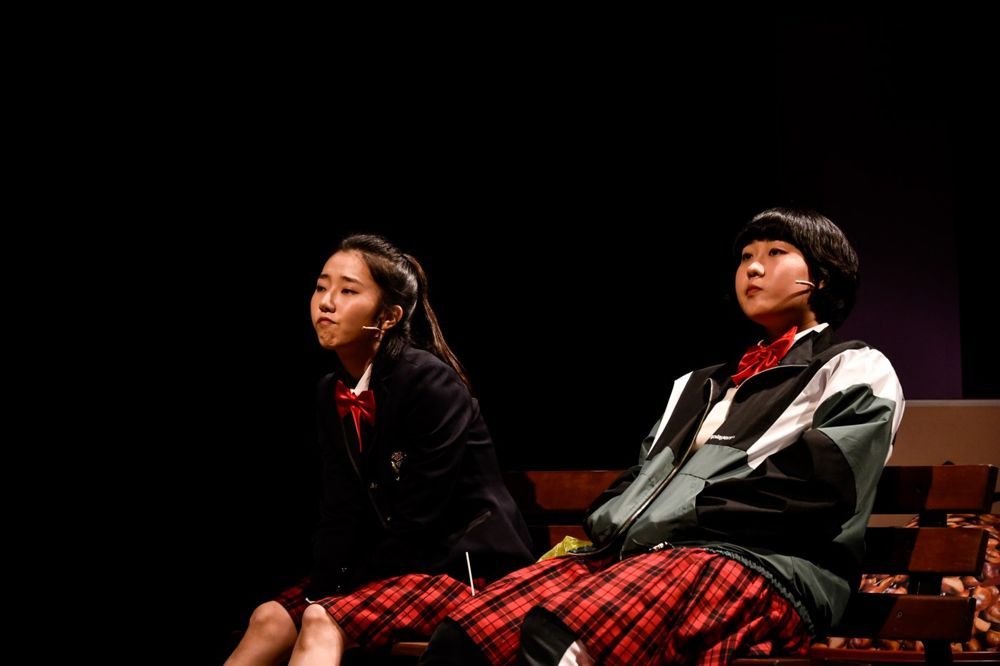

Green Pig > Archive > Barbaryman: Kill Like I Do

In front of Pagoda Park, among the old men, middle-schooler Homi holds a picket sign demanding lower prices. Her family: a grandfather with a secret, a mother blinded by a love that left, and a flasher she does not want to call dad. Her friend Gungjeon is fed up with a mother who only makes money. At the peak of adolescence, an incident cuts across two crooked families. A "play with songs" about the feeling of chasing one love for a lifetime, and the gaze that calls it obsession and intervenes.
2021.11.9–27 / Doosan Art Center Space111 - new work by a Doosan Yonkang Arts Award winner
Playwright: Yoon Mihyun
Composer: Na Sirin
Director: Yoon Hansol
Assistant director: Jung Yujin
Choreography: Choi Gyeonghun
Set: Kim Hyerim
Lighting: Kim Hyeongyeon
Sound: Jeon Minbae
Video: Yoon Mincheol
Costumes: Kim Jiyeon
Make-up: Jang Gyeongsuk
Producer & Stage manager: Staff Seoul
Graphic design: Workroom
Production: Doosan Art Center, Green Pig
Cast: Park Giwon, Park Yujin, Lim Jinung, Hwang Miyeong, Kim Minju, Jung Yanga, Lee Dongyeong, Kim Wontae, Park Subin, Lee Seunghun, Lee Juhyeong, Lee Jiwon, Choi Jihyeon
2022.3.14 Audience review (Naver blog)
2022.1.5 Audience review (Naver blog)
2021.12.23 Audience review (Naver blog)
2021.12.1 Audience review (Naver blog)
2021.11.28 Audience review (Naver blog)
2021.11.26 Audience review (Naver blog)
2021.11.25 Audience review (Naver blog)
2021.11.22 Criticism (Daehak Jiseong In&Out)
2021.11.20 Criticism (Naver blog)
2021.11.15 Article (Kyunghyang Shinmun)
2021.11.15 Article (CBS NoCut News)
2021.11.13 Audience review (Naver blog)
2021.11.13 Audience review (Naver blog)
2021.11.12 Criticism (Voice of the People)
2021.11.11 Criticism, Lee Gyeongmi (Naver blog)
2021.11.5 Article (KOPIS blog)
Previous: Home Sweet Home: Dorothy | Next: Ipjeong-hada
Back to the archive | Any work
Published 2026.11.13